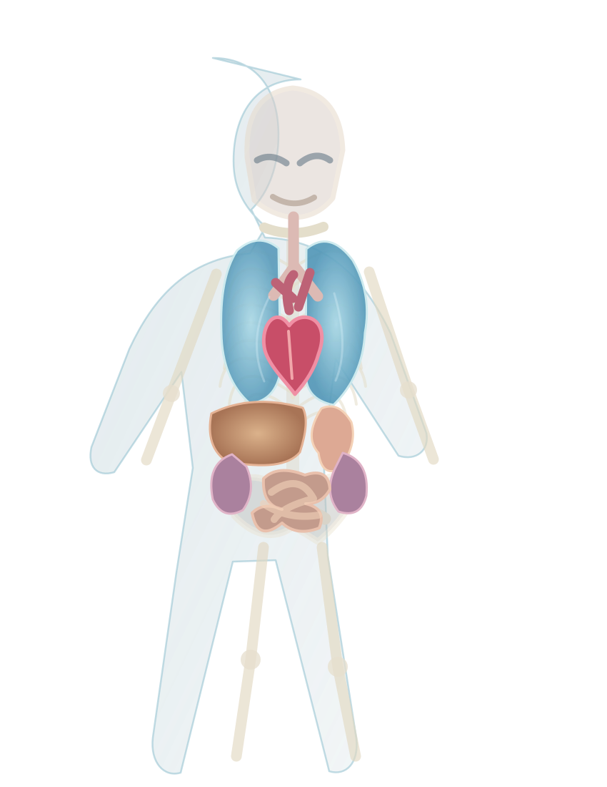

HUMAN ANATOMY · SYSTEMS ATLAS
Drag to rotate · scroll to zoom · click a structure to inspect
Initializing viewer

Anatomical reference illustration — not an interactive 3D model. Check your network or use the original atlas.Preparing skeletal model
Loading anatomical geometry and WebGL renderer…